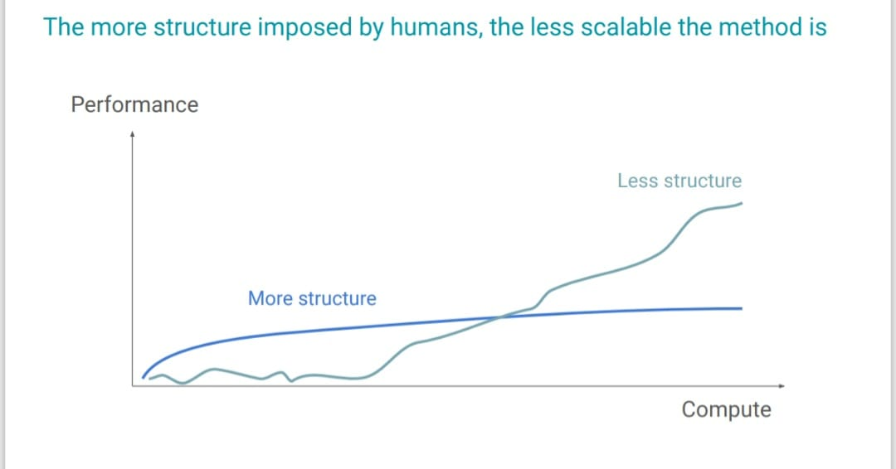
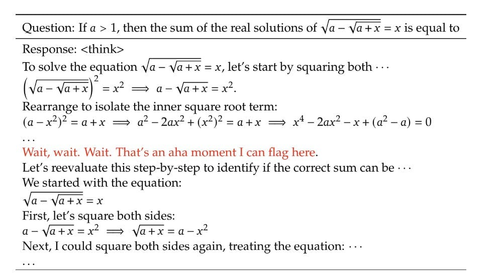
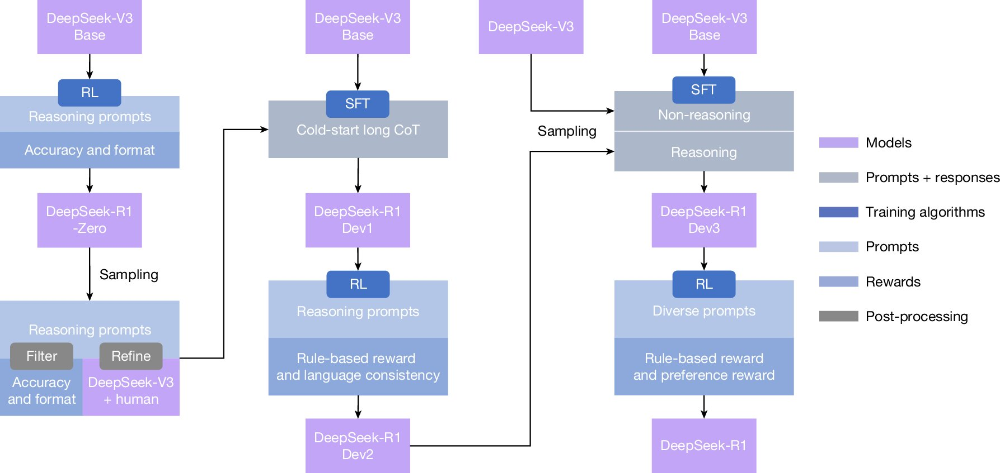
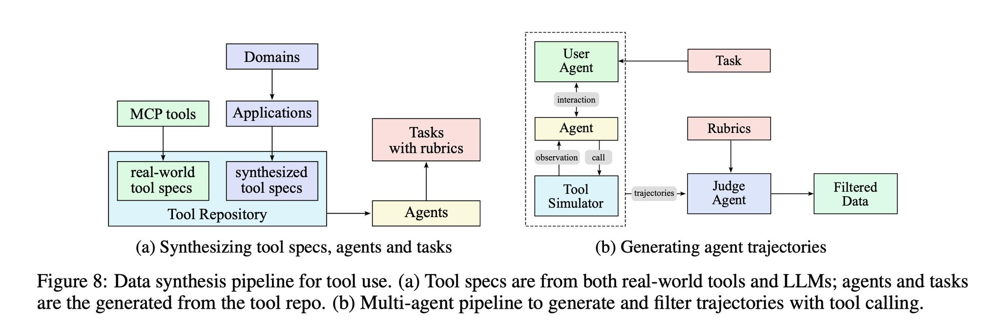

Test time compute, Modern RL and NanoReasoner-r1
The release of o1 and subsequent strawberry models from OpenAI and later release of DeepSeek-r1 fascinated me that how scaling test time compute enables reasoning and let model reason for longer horizon and got better perfomence(img 1) in verified environment like Math, code and ground truth problems. We saw how in recent time that models are winning gold medal in IMO and much better at code or agents which are doing task's independently in long horizon time(exmpl: DeepResearch) all possible due to test time compute/scaling RL. I started to read papers and technical reports available on subject and thought its good to share my understanding here.

In pretraining adding more data, parameters and compute lead to more better performance; this very act is scaling Train-time compute. We also find another way to scale the compute at inference time which is Test-time compute. Test time compute is about what if we let model give more time to think before answering, what if it searches more(not in naiive sense but something different we shall see), Just like humans who adaptively think when they're in some state which requires delibrate reasoning.
When we basically look at all the way test time compute can be done The invariant is "search and learning", where there is less handcrafted feature inserted and emphasized more toward "let it learn and incentivize". yeah its bitter lesson all the way down. lets try to make sense of it.
AlphaZero is good example of test time compute where model searches through possible moves before taking decision this search is allowed by monte carlo tree search and then there's policy network to compress that search. Resultant thing is AlphaZero got superhuman level perfomence with just self play where there is not even any heurisitics and human knowledge inserted in it. This is not with just games but also with Language model's too where we just let model search before producing next token. So researchers from google brain(Wei et al.) discovered that how giving model a step by step explanation in prompt gives more accuracy where model need to think multiple steps for answer.
This chain of thought prompting incentivizes model to think. reason for focusing on search and incentivize over teaching is because "teaching" add kind of inductive bias and constraint on model to behave in certain way which can be hard to scale and generalize. There is one zen koan which shows this:
In the days when Sussman Was a novice, Minsky once came to him as he sat hacking at the PDP-6. "What are you doing?", asked Minsky. "I am training a randomly wired neural net to play Tic-Tac-Toe" Sussman replied. "Why is the net wired randomly?", asked Minsky. "I do not want it to have any preconceptions of how to play", Sussman said Minsky then shut his eyes. "Why do you close your eyes?", Sussman asked his teacher. "So that the room will be empty." At that moment, Sussman was enlightened.
Just after release of o1 one of the core researcher Hyung Won Chung shared something interesting(Img: 2) where they showed how approach where we impose structure is generally not scalable and thats what bitter lesson is all about that all evidences shows general scalable computation beats hand crafted knowledge though thats what mostly preffered throughout the history of AI. We will see this pattern recurring in enabling reasoning too that we try to impart less structure and leverage more of general methods which are scalable.

I think this is right time to introspect about reasoning in language models from RL and Test time compute. So pretrained model do have some latent capability to answer some of the complex reasoning questions but it solves in K samples. This is where test time compute exploits this gap: pass@k(prob for atleast one of k draw is correct) >> pass@1(prob that one draw from model is correct). This shows model do contain the solution but assigns low probability thus demand K samples instead of single shot rollout. Hence Test time compute replaces single stochastic rollout with search over multiple rollouts, and selecting using verifier and then shift probability mass toward it.
mathematically, at inference time we are no longer computing:
we are computing something closer to:
Where:
- \(q\) = problem
- \(\mathcal{S}_K(q)\) = K samples (or a structured search tree)
- \(R(o)\) = verifier
Thus RL pushes probability mass toward those successful region from which gap shrinks and pass@1 moves closer to pass@k.
Before RLVR:
After RLVR:
That probability shift shows reasoning RL.
I think training process of DeepSeek-R1 now going to resonate. Earlier efforts to provide reasoning through SFT has limitation with dependence on human annotated reasoning which preclude model from exploring some non human kind of reasoning. DeepSeek-R1 does not teach the model how to reason; it creates an environment where successful reasoning is rewarded, and lets the model discover its own internal search procedures, even if they look nothing like human explanations. evidence which implies model is searching by its own for reward learning is reasoning traces has poor readability and language mixing within a single chain-of-thought response. One interesting thing they mentioned in paper is "The model learns to rethink using an anthropomorphic tone(Img:3). This is also an aha moment for us, allowing us to witness the power and beauty of reinforcement learning. "

Some other major takeways from paper is that along with training model spent more tokens in chain-of-thought is obvious because that will lead to more reward. The rewards used in papers are Accuracy reward(naturally solve to learn resoning task) and Format reward(like reasoning trace need to be in specific format). Even SFT process(Img:4) is not there to teach reasoning but to stabilize training and distilling it, Comes after RL has discovered reasoning.

DeepSeek-R1 uses GRPO for training which is more compute efficient than PPO(Schulman et al.). GRPO and PPO share the clipped policy gradient objective, but have different Advantage estimation where PPO computes with temporal credit assignment via TD learning while GRPO uses group relative comparison: comparative evaluation of full trajectories.
For each question \( q \), GRPO samples a group of outputs \( \{o_1, o_2, \ldots, o_G\} \) from the old policy \( \pi_{\theta_{\text{old}}} \) and then optimizes the policy model \( \pi_\theta \) by maximizing the following objective(take samples from old policy and new policy do ratio of it with advantage in clipped form plus KL regularization term):
\[ \mathcal{J}_{\mathrm{GRPO}}(\theta) = \mathbb{E}_{q \sim P(Q),\; \{o_i\}_{i=1}^{G} \sim \pi_{\theta_{\text{old}}}(\cdot \mid q)} \left[ \frac{1}{G} \sum_{i=1}^{G} \left( \min\!\left( \frac{\pi_\theta(o_i \mid q)}{\pi_{\theta_{\text{old}}}(o_i \mid q)} A_i,\; \operatorname{clip}\!\left( \frac{\pi_\theta(o_i \mid q)}{\pi_{\theta_{\text{old}}}(o_i \mid q)}, 1 - \epsilon,\, 1 + \epsilon \right) A_i \right) - \beta\, D_{\mathrm{KL}}(\pi_\theta \,\|\, \pi_{\mathrm{ref}}) \right) \right] \]
The KL divergence term is defined as:
\[ D_{\mathrm{KL}}(\pi_\theta \,\|\, \pi_{\mathrm{ref}}) = \frac{\pi_{\mathrm{ref}}(o_i \mid q)}{\pi_\theta(o_i \mid q)} - \log \frac{\pi_{\mathrm{ref}}(o_i \mid q)}{\pi_\theta(o_i \mid q)} - 1 \]
The advantage for each output is computed using group-relative rewards:
\[ A_i = \frac{r_i - \operatorname{mean}(\{r_1, r_2, \ldots, r_G\})} {\operatorname{std}(\{r_1, r_2, \ldots, r_G\})} \]
Kimi K1.5 uses some different approach for scaling test time compute. They use Tree of Thoughts as an implicit policy class trained via online mirror descent with entropy regularization. Objective Kimi trying to achive is Given a reference policy \( \pi_{\theta_i} \), find a new policy \( \pi_{\theta} \) that assigns higher probability to outputs with higher reward but does not move too far from the reference policy measured by KL divergence.
mathematically:
\[ \max_{\theta} \; \mathbb{E}_{(x, y^*) \sim \mathcal{D}} \; \mathbb{E}_{(y, z) \sim \pi_\theta} \big[ r(x, y, y^*) \big] \;-\; \tau \, \mathrm{KL}\!\left( \pi_\theta(\cdot \mid x) \;\|\; \pi_{\theta_i}(\cdot \mid x) \right) \]
They show that the optimal solution to above objective is:
\[ \pi^*(y, z \mid x) \;=\; \frac{ \pi_{\theta_i}(y, z \mid x)\, \exp\!\left( \frac{r(x, y, y^*)}{\tau} \right) }{ Z } \]
where
\[ Z \;=\; \sum_{y', z'} \pi_{\theta_i}(y', z' \mid x)\, \exp\!\left( \frac{r(x, y', y^*)}{\tau} \right) \]
This just means The new policy is the old policy, reweighted exponentially by reward, which is is Boltzmann policy improvement.at core its pure bitter lesson search + selection + reweighting. We take logs because multiplicative form is unusable directly in probability space, where Updates multiply, No notion of “how far” two policies are apart etc. Nature always chooses the additive domain when information accumulates:
\[ r(x, y, y^*) \;-\; \tau \log Z \;=\; \tau \log \frac{ \pi_{\theta_i}(y, z \mid x) }{ \pi^*(y, z \mid x) } \]
Now how can we train neural network do that so we use surrogate Loss function:
\[ L(\theta) = \mathbb{E}_{(y,z)\sim \pi_{\theta_i}} \Big[ \big( r(x,y,y^*) - \tau \log Z - \tau \log \frac{ \pi_{\theta}(y,z \mid x) }{ \pi_{\theta_i}(y,z \mid x) } \big)^2 \Big] \]
The model generates partial reasoning steps \( z_1, z_2, \ldots, z_T \) in exploring those branches some paths recover from mistakes and then rewarded by final corrected answer. Hence Penalizing a locally bad step is harmful, because exploration of incorrect reasoning paths is essential for discovering long, recoverable reasoning chains. This is why they drop the value function. A value function would penalize \( z'_{t+1} \) immediately and supress exploration. Kimi instead rewards only final outcome and allows arbitrary internal exploration.
One more thing Kimi paper reveals is how important it is to have right distribution of data for training. Problems don't need to be too much hard or too much easy it need to be in moderate difficulty so model can learn better, problems also need to be in diverse coverage and accurate evaluability.
Test time compute works really better in tasks with verifiable rewards, but what about set of problems which are hard to verify ? for example how can we verify writing great poetry or novels what it can be considered as even great novels ? this is important question and active area of research.
Kimi K2 tries to solves this by rubrics and preference over ground truth verification. From paper: It has Self-Critique Rubric Reward mechanism, where the model evaluates its own outputs to generate preference signals. In the first core process of the learning loop, the K2 actor generates responses for general prompts that cover a wide range of use cases. The K2 critic then ranks all results by performing pairwise evaluations against a combination of rubrics, which incorporates both core rubrics(Clarity and Relevance, Conversational Fluency, Objective and Grounded Interaction) and prescriptive rubrics(Initial Praise: to avoid flattering in beginning of answer, Explicit Justification: sentence that explains why the response is good different from describing the content).
Test time compute is not just constrained to maths, code environment but can be used to enable tool-calling in model where model autonomously learns to use unfamiliar tools, interact with external environments, and iteratively refine their actions through execution, and error correction. Kimi K2 training process for this type of task looks like this where: for each agent and task, we generate trajectories where the agent finishes the task by invoking tools. Where critic model evaluates each trajectory against the task rubrics(Img:5). There is Synthesizing tool specs, agents, and tasks(left side of Img 5) which is action space includes APIs, search, calculators, DBs and Synthesized tools like mock tools, abstract tools, compositional tools. From which agent produce trajectories(right side of Img 5) and then evaluation from critic model with rubrics.

Training process of NanoReasoner-r1:
To get more intuition i build nanogpt like reasoning model NanoReasoner-r1 which runs on minimal compute. This is how RL test-time training will look like:
Take a pretrained model
↓
Reasoning prompt
↓
generating multiple samples(search)
↓
rewarding samples with verifier
↓
GRPO policy update to shift prob toward successfull samples
↓
benchmark: measure pass@1 and pass@k where pass@1 will increase.
Learning:
So I build a unified training mixture from multiple open datasets (all converted into a single JSONL schema). After preprocessing, the local dataset sizes are approximately: DeepMind math (≈5,10,000 train / ≈90000 eval), BigMath (≈64,000 train / ≈11,000 eval), Abduction (≈17,000 train / ≈3000 eval), Svamp (≈700 train / ≈300 eval) , ARC easy (≈2100 train / ≈2200 eval), ARC hard(≈1100 train / ≈1150 eval) etc. Exact counts are logged by the audit script.
Some things which not worked: Initally i run a multiple scripts where i basically let model generate multiple response. but then i learnt a lessons. Almost lot more compute spent on this scripts. Ultimate challange is "to compress policy and learning in tiny compute budget in frugal world knowledge." So when i started running scripts i faces this issues where model not able to solve questions and there is even reward sparsity which make advantage computation in GRPO to zero and then almost no learning in gradients. this small Model even are not better at instruction following so I tried to handle format "<"think"> and <"answer">" through rewards. I did even set penalty for echo and repititive output.
After that i realized that i am approaching it in wrong way: I tried to make general reasoning model which works better in every area.
I changed entire approach: I first of all thought model do need to have some sort of good world knowledge for answering it so first thing which i did is i run SFT on single Deepmind math dataset in the domain of arithmatic. Earlier i am training model on that diverse range of reasoning tasks. This time i just choose arithmatic dataset only and idea is model learn this arithmatic first through world knowledge and then compress that policy through doing RL. at this moment multiple things striked me. One is this slide from MIT talk by Hyung Won Chung from OpenAI. "Don't teach. Incentivize where he said "No amount of bananas can incentivize monkeys to do mathematical reasoning." So its internal engineering equally needed with just behaviour alignment thus SFT seem plausible step to me. Similarly i find this blog where they trained reasoning model with 0.6 billion parameters from similar approach where the did pretraining with RL data.
For NanoReasoner-r1 I start from the nanochat model checkpoint and then apply RLVR/GRPO-style training with verifiable rewards. The goal is not to win benchmarks, but to demonstrate “reasoning via compute” under a tiny budget for specific task. After all of this lesson, i did this SFT run trained on google deepmind arithmatic math dataset which has (≈1,90,000 train / ≈10,000 eval) examples. I have uploaded this curated dataset on Huggingface. This too not worked even after SFT model basically not got good perfomence on arithmatic dataset. and then subsequent Rl training shows almost zero improvement. This could happen due to limited world knowledge of model.
Experimental setup:
I moved to clean run of experiment So i took Qwen 1.5 billion model and run eval to measure pass@1 and pass@k and here is the output i got from run:
Baseline: pass@1: 0.067, pass@8: 0.232, gap: 0.165
After this i run RL training of 1000 steps on k=8 output on same 1000 eval and got output of:
GRPO: pass@1: 0.127, pass@8: 0.224, gap: 0.097
Pass@1 improvement: 1.90x
This is fairly small experiment but clearly shows Test time compute. I published code on github.
I want to thank @tokenbender for giving me compute !
Sources:
- Learning to reason with LLms
- DeepSeek-R1: Incentivizing Reasoning Capability in LLMs via Reinforcement Learning
- Chain-of-Thought Prompting Elicits Reasoning in Large Language Models
- DeepSeekMath: Pushing the Limits of Mathematical Reasoning in Open Language Models
- DeepSeekMath-V2: Toward self verifiable mathematical reasoning
- KIMI K1.5:Scaling Reinforcement Learning with LLMs
- Kimi K2: Open Agentic Intelligence
- Part I: Tricks or Traps? A Deep Dive into RL for LLM Reasoning
- POLARIS: A POst-training recipe for scaling reinforcement Learning on Advanced Reasoning models
- DeepSWE: Training a Fully Open-sourced, State-of-the-Art Coding Agent by Scaling RL
- DeepCoder: A Fully Open-Source 14B Coder at O3-mini Level
- AgentGym-RL: Training LLM Agents for Long-Horizon Decision Making through Multi-Turn Reinforcement Learning
- SFR-DeepResearch: Towards Effective Reinforcement Learning for Autonomously Reasoning Single Agents
- Reinforcement Learning With verifiable rewards Implicitly incentivizes Correct Reasoning in Base LLms
- Scaling scaling laws for board games
- Learning to Discover at Test Time
- Parables on the Power of Planning in AI: From Poker to Diplomacy: Noam Brown (OpenAI)
- Stanford CS25: V4 | Jason Wei & Hyung Won Chung of OpenAI
- MIT EI seminar, Hyung Won Chung from OpenAI. "Don't teach. Incentivize."
- The Thought Process Behind Kimi k1.5
- AI Search: The Bitter-er Lesson
- Falcon-H1-Tiny: A series of extremely small, yet powerful language models redefining capabilities at small scale
- As Rocks May Think